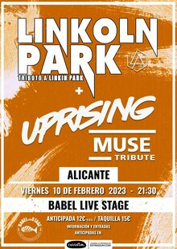

El próximo Salón del Manga y Cultura Japonesa de Alicante se celebrará los días 15 y 16
de abril de 2023 y, durante ese fin de semana, contará con más de 200 actividades
relacionadas con la cultura japonesa y muchísimas más sorpresas.
LINKOLN PARK + UPROSONG
Tributo a Linkin Park y Muse
En nuestro firme propósito de mantener viva la música de Linkin Park en nuestro país y hacer honor a
la obra de Chester volvemos a la carretera con más ganas que nunca.
Su legado va mucho más allá de la música.

Love Zombies
Yincana de Supervivencia Zombie
Los participantes podrán disfrutar de pruebas, miedo, agilidad, puzles y otras aventuras,
con la presencia zombies y personajes varios del mundo del terror. Por unas horas los
participantes podrán elegir cual es su papel en el juego y pasarlo muy bien.
Japan Weekend Madrid
Ifema Madrid
Japan Weekend Madrid es la mayor feria en España sobre anime, manga, cultura
japonesa, videojuegos y el mayor encuentro entre aficionados a la cultura otaku.
Vendran artistas de todas partes de España e invitados increibles.